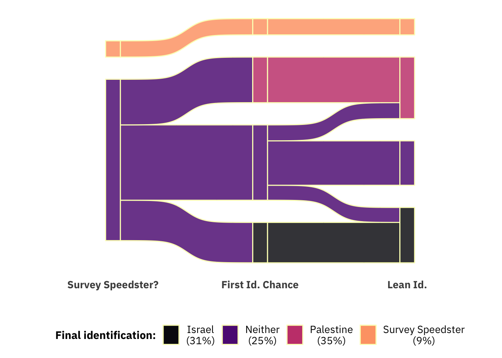
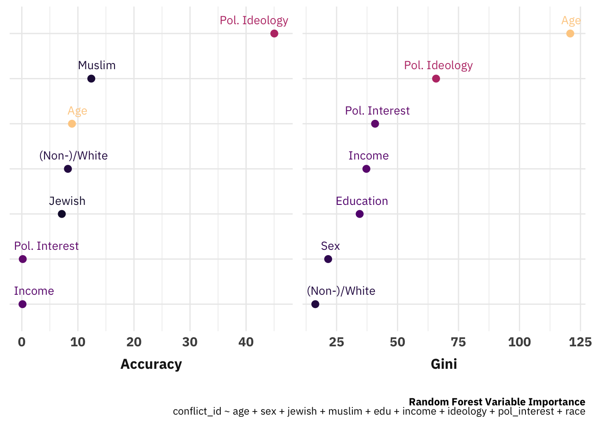
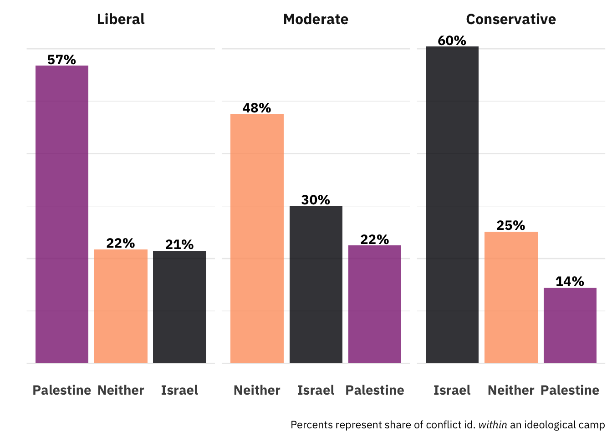
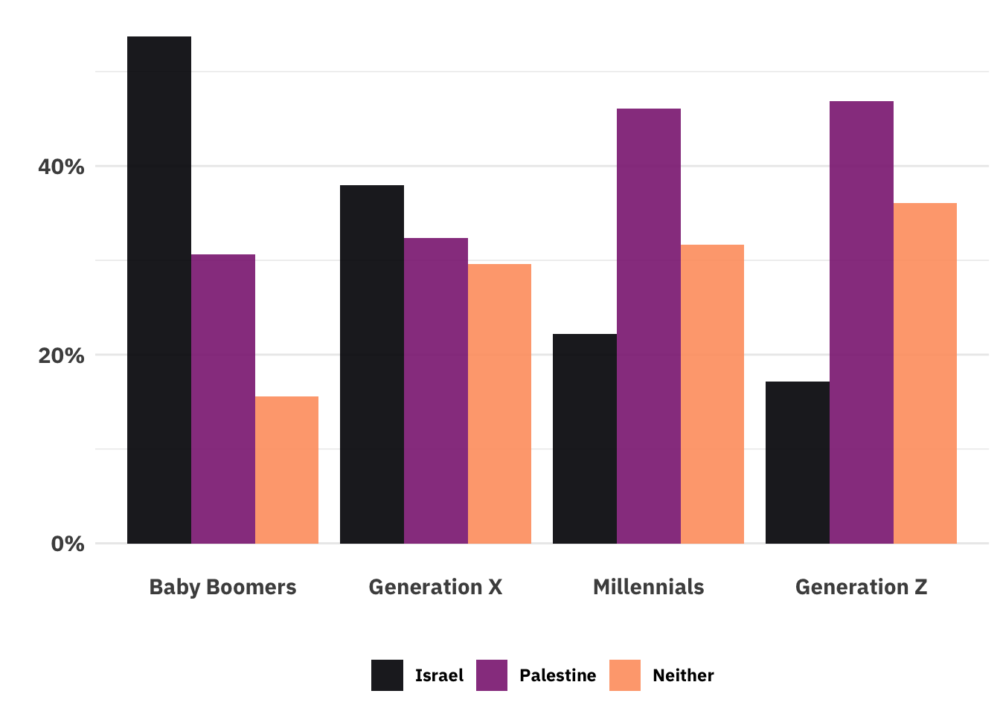
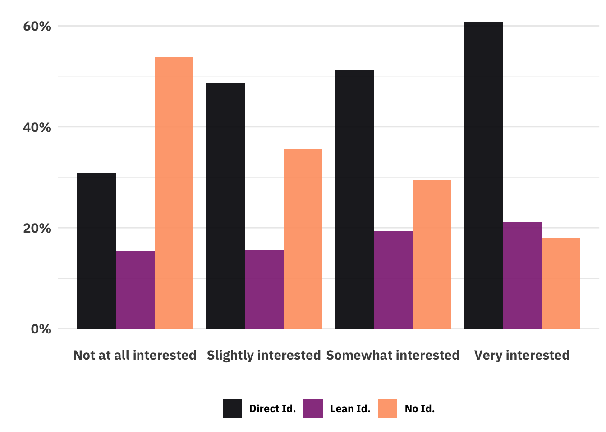

NOTICE!
This piece is currently up as a placeholder so that links in other pieces don’t produce errors. The post will be finalized and posted the week of January 6th, 2025.
Introduction
- The theory tested in the experiment
- Strategic SDO
- Discussion of sample selection will be in the descriptive results!
- The descriptive results
- Who entered the study is ‘who cares about Israel and Gaza’
- A new form of bias/favouritism: The Favored Facts Method
- (Liberal) Norms of war (Really the core dependent variable, according to our theory)
- The path not tread: (Liberal) Speech norms (classic Stoffer stuff)
Appendix or “Descriptive Insights”
Sample Selection
Unlike most studies, the method by which our sample entered provides information on the matter itself. As mentioned in the introduction, our design was to show partisans of the two sides either favorable or unfavorable information about the prospects of the side they identified with in post 10/7 conflict. Obviously, not everyone is a partisan of one of the two sides. These people can’t substantively participate in this experiment, so we wanted to detect them and have them participate in a different experiment (one where they could potentially contribute useful information). The very detection of these people provides the first interesting analysis.
After asking a series of demographic questions, we asked the following question:
Recently there has been a lot of news about the conflict between Israelis and Palestinians in the Middle East. Which of the following statements best describes your feelings about the conflict?
We started with 712 participants, 65 of whom were excluded from all analyses as they sped through the survey faster than one could have read and understood the materials. under our consideration saw the first
Of the 647 non-speeders, 162 (25%) identified with the Israeli side, 183 (28%) identified with the Palestinian side, and the remaining 302 (47%) chose the third option. Those who chose the last option then saw:
Even if you do not tend to identify with either side, would you say that you lean towards one side or the other?
Of these, 60 (20%) indicated that they lean toward the Israeli side, while 64 (21%) leaned toward the Palestinian side. That leaves 178 (59%) again choosing neither side.
All in all, the flow of participants looks as follows:

Some may see this and think, so what? Some people identify with one side or the other and some identify with neither. It’s life! But this should be strange. First, leaving aside the particulars of the conflict, Americans are (in)famous for not caring about foreign affairs. The fact that Neither was the least frequent choice (by far) would rattle some cocos. Second, it would be very surprising to a time-traveller from just a few years ago that the plurality of a representative-ish sample identified with Palestine. Lastly and related to the previous points, the Gaza conflict has proven to be a subject that evokes passions.1 Among those who lean towards one of the two sides, there are likely those who were driven to change vote because of it, people protested, others counterprotested, etc. The causes and effects of this identification is worth studying.2.
1 Upon reading a draft of this, a colleague remarked that, however stongly one feels about the two sides of the conflict over Gaza, the most odious group is, past any doubt, the survey speedsters. This colleague is a ne’er-do-well.
2 Let’s hope even the associations are worth studying haha lol
Background Variables
To understand who identifies with which side (or no side at all), I ran a random forest model predicting respondents’ ideological categorization into one of five categories (no identification, plus ‘direct’ and ‘lean’ identification with the two sides).3
3 For those unfamiliar with random forests, there is an explanation forthcoming!
Which demographic variables were important in determining whether people identified with Israel or Palestine?

In the plot below we can see a result of political ideology’s importance is such an important variable in determining which side (if any) a person identifies with in the conflict. The plurality of all types of liberals identifies with Palestine, the plurality of self-described moderates identifies with neither sid, and the plurality of conservatives identify with Israel.

Similarly, we can see age’s importance:

You can think of this plot as telling you, “If you meet a random person from this generation, what is the probability that they fall into one of these buckets?” And you see extremely strong generational effects. Whereas the plurality of Baby Boomers and Gen Xers identify with Israel, Israel identification is the least chosen option among both millennials and gen z. In fact, in both of those groups, identification with the Palestinian side of the conflict is about twice as frequent as identification with Israel.
Political Interest
Instead of asking which side people identify with, we can look at how quickly they identify as a function of their self-reported political interest.4 As one would expect, the likelihood of identifying with one of the sides more than doubled going from those who said that they’re not at all interested in politics to those who report being very interested in politics.
4 Political interested was measured with the question “How interested are you in politics?” to which people could choose among “{Not at all, Slightly, Somewhat, Very} Interested”.
I should mention that it’s very important to refer to political interest measured this way “self-reported political interest” because political interest is like news consumption and voting in that all three conform to House MD’s maxim, “Everyone lies.”
